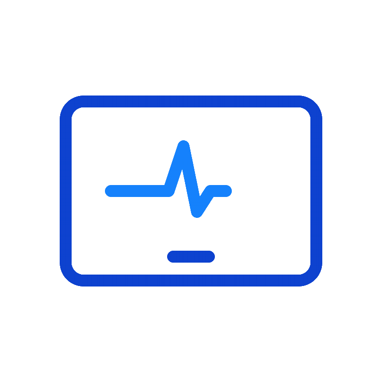

<!-- <app-header *ngIf="gv.userDetail && gv.userDetail.id_token && gv.userDetail.role"></app-header>
<mat-drawer-container class="main-wrapper-container" attr.role={{gv.userDetail.role}}>
    <mat-drawer #sidenav mode="side" opened  *ngIf="gv.userDetail && gv.userDetail.id_token && gv.userDetail.role">
        <app-left-nav></app-left-nav>
    </mat-drawer>
    <mat-drawer-content class="bg-gray"> -->
        <!-- <div class="fw-100"  *ngIf="gv.userDetail && gv.userDetail.id_token && gv.userDetail.role">


        </div> -->
        <router-outlet></router-outlet>
<!--
    </mat-drawer-content>
</mat-drawer-container> -->


<ng-container *ngFor="let c of apiResPopup;let i=index">
    <ng-container>
        <div class="modal show bg-blur apimodal">
            <div class="modal-dialog" role="document">
                <div class="modal-content">

                    <div class="fw-100 text-center my-md">
                        <div *ngIf="c.res.status_code==200">
                            <svg xmlns="http://www.w3.org/2000/svg" viewBox="0 0 192 192" width="48" height="48">
                                <circle cx="96" cy="96" r="84" fill="none" stroke="#6FA643" stroke-linecap="round"
                                    stroke-linejoin="round" stroke-width="8" />
                                <path fill="none" stroke="#6FA643" stroke-linecap="round" stroke-linejoin="round"
                                    stroke-width="8" d="M140 63l-54.7 62.92h0L56.2 92.44" />
                            </svg>
                        </div>
                        <div *ngIf="c.res.status_code!=200">
                            <svg xmlns="http://www.w3.org/2000/svg" viewBox="0 0 192 192" width="48" height="48">
                                <circle cx="96" cy="96" r="84" fill="none" stroke="var(--red3)" stroke-linecap="round"
                                    stroke-linejoin="round" stroke-width="8" />
                                <path fill="none" stroke="var(--orange3)" stroke-linecap="round" stroke-linejoin="round"
                                    stroke-width="8" d="M96 118V54" />
                                <circle cx="96" cy="135.67" r="2" fill="none" stroke="var(--orange3)"
                                    stroke-miterlimit="10" stroke-width="8" />
                            </svg>
                        </div>
                        <div class="fw-100 break-word p-4" *ngIf="c.res.status != 500">
                            <ng-container *ngIf="c.res.message">
                                <strong class="fw-100 mt-3 text-uppercase text-capitalize"
                                    *ngIf="c.res.status">{{c.res.status}}</strong><br>
                                <p class="fw-100 mt-3 break-word" *ngIf="c.res.message">{{c.res.message}}</p>
                            </ng-container>
                        </div>
                        <div class="fw-100 break-word p-4" *ngIf="c.res.status == 500">
                            <ng-container *ngIf="c.res.error.message">
                                <strong class="fw-100 mt-3 text-uppercase text-capitalize"
                                    *ngIf="c.res.error.status">{{c.res.error.status}}</strong><br>
                                <p class="fw-100 mt-3 break-word" *ngIf="c.res.error.message">{{c.res.error.message}}</p>
                            </ng-container>
                        </div>
                        <div class="fw-100">
                            <button class="btn btn-primary share-btn" (click)="close(i)">Ok</button>
                        </div>
                    </div>
                </div>
            </div>
        </div>
    </ng-container>
</ng-container>


<div id="loaderContainer" *ngIf="Gloader && Gloader['val'] =='true'">
    <div id="loaderGif" class="text-center">
        
        <div (click)="forceReload()">{{Gloader.msg}}<br><span class="forceReload">Force Reload</span></div>
    </div>
</div>
<div *ngIf="networkDisconnected" class="network-disconnected">
    <div class="text-center h-full">
        <svg xmlns="http://www.w3.org/2000/svg" viewBox="0 0 192 192" width="48" height="48">
            <circle cx="96" cy="96" r="84" fill="none" stroke="var(--red3)" stroke-linecap="round"
                stroke-linejoin="round" stroke-width="8" />
            <path fill="none" stroke="var(--orange3)" stroke-linecap="round" stroke-linejoin="round" stroke-width="8"
                d="M96 118V54" />
            <circle cx="96" cy="135.67" r="2" fill="none" stroke="var(--orange3)" stroke-miterlimit="10"
                stroke-width="8" />
        </svg>
        <div>Please check the network connection.</div>
    </div>
</div>

